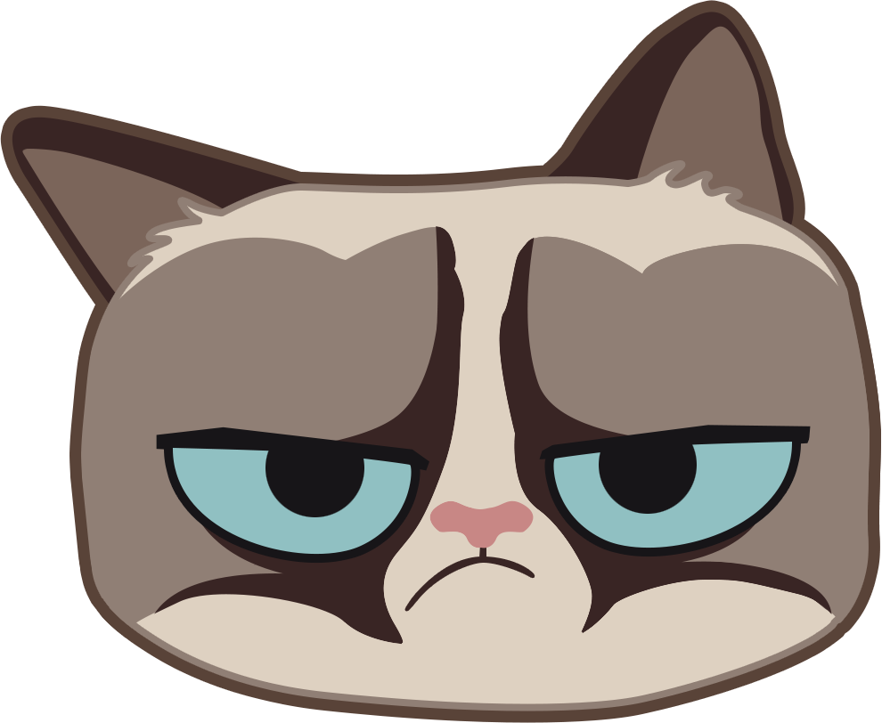

<md-toolbar class="header md-whiteframe-6dp">
    <div class="md-toolbar-tools" layout="row" layout-align="space-between center">
        
        <div class="user-action">
            <md-button class="user md-fab md-mini" ng-click="self.href(self.user.html_url)">
                <md-tooltip md-direction="left">{{self.user.login}}</md-tooltip>
                
            </md-button>
            <md-button class="md-icon-button" ng-click="self.href('/#/settings')">
                <md-icon md-svg-icon="../images/git-tools.svg"></md-icon>
            </md-button>
            <md-button class="md-icon-button" ng-click="self.signout()">
                <md-icon md-svg-icon="../images/git-signout.svg"></md-icon>
            </md-button>
        </div>
    </div>
</md-toolbar>

<div class="dashboard" flex layout="column" layout-align="start stretch">

</div>